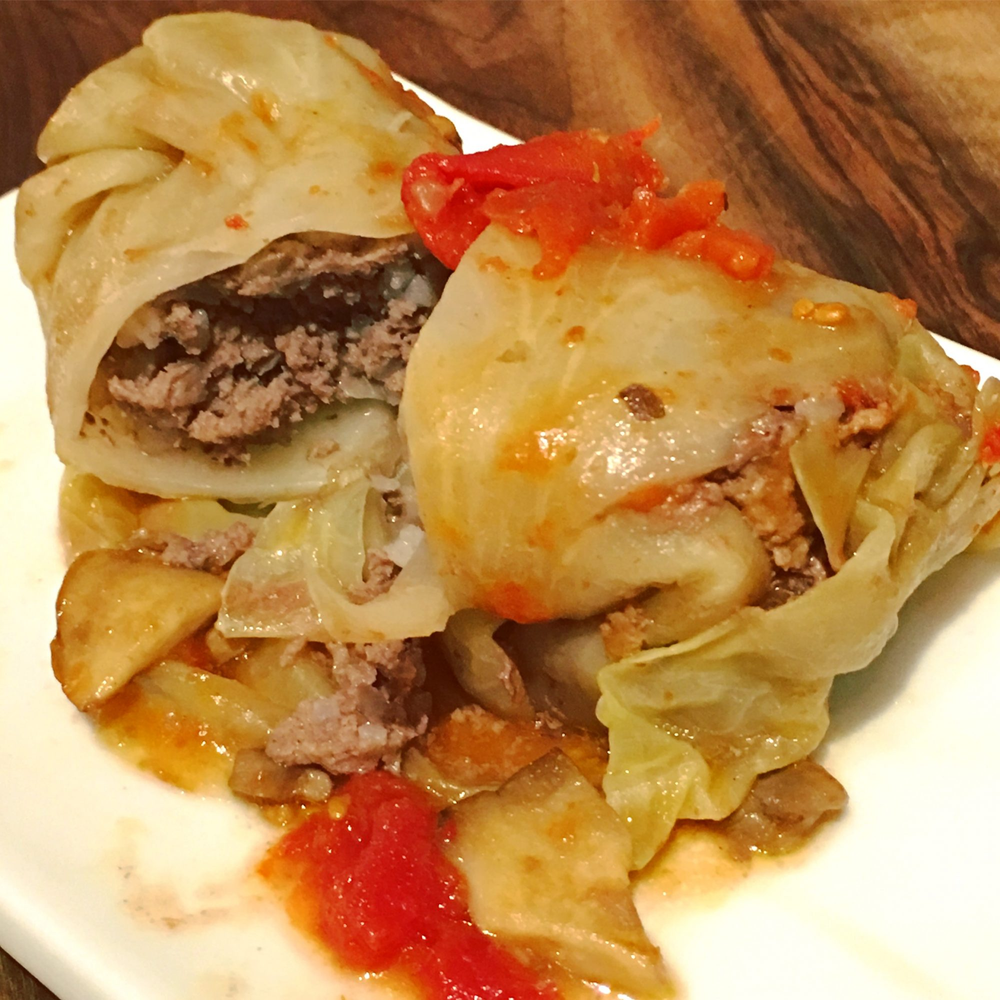

Polish Cabbage

Description
Polish people are very enthusiastic about their cabbage recipes, and for good reason!
This collection of our best Polish cabbage recipes features family favorites that have
been passed down through the generations with cabbage in every form and every color —
from traditional cabbage rolls to Halushki, a comforting dish of fried cabbage, bacon, and
noodles, from mayo-less cabbage slaw to Poland's national dish, Bigos, which is packed with
sauerkraut. Take a look and discover some new favorite ways to cook cabbage.
Ingredients
- 2 heads cabbage, cored
- 2 tablespoons margarine
- 2 onions, diced
- 4 pounds ground beef
- 2 (10.5 ounce) cans chicken with rice soup
- 2 cups rice
- 2 eggs
- 1 teaspoon dried marjoram, or to taste
- salt and ground black pepper to taste
- 1 (10.75 ounce) can golden mushroom soup
Instructions
- Preheat oven to 350 degrees F (175 degrees C).
- Bring a large pot of water to a boil. Boil cabbages until leaves are falling off.Remove leaves from water as they peel off and set aside.
- Melt margarine in a large skillet. Cook onions in margarine until translucent, 5 to 7 minutes.
- Mix cooked onions, ground beef, chicken with rice soup, rice, eggs, marjoram, salt, and pepper in a bowl.
- Take a cabbage leaf, lay it flat, and trim the thickest part towards the bottom of the leaf to make it easier to roll; repeat with all leaves. Take the darker outside leaves and line the bottom of the roasting pan with them.
- Scoop a portion of the beef meat mixture into a leaf and wrap the leaf around the mixture, enveloping the meat completely. Repeat until all of the beef mixture is used. Arrange the stuffed cabbage leaves into the roasting pan. Top with any remaining cabbage leaves. Cover the roasting pan with aluminum foil.
- Bake in preheated oven for 1 hour 45 minutes. Remove aluminum foil, peel back the top layer of extra cabbage leaves, and pour golden mushroom soup over the stuffed cabbage leaves. Replace top cabbage leaves, return roasting pan to oven, and continue baking until the soup is hot, about 15 minutes.